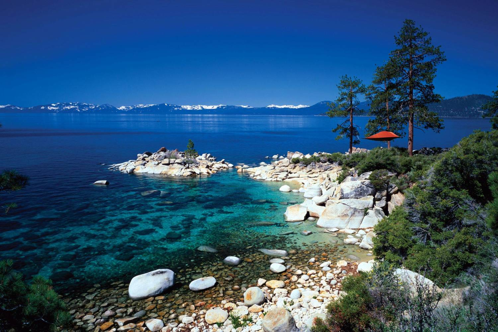
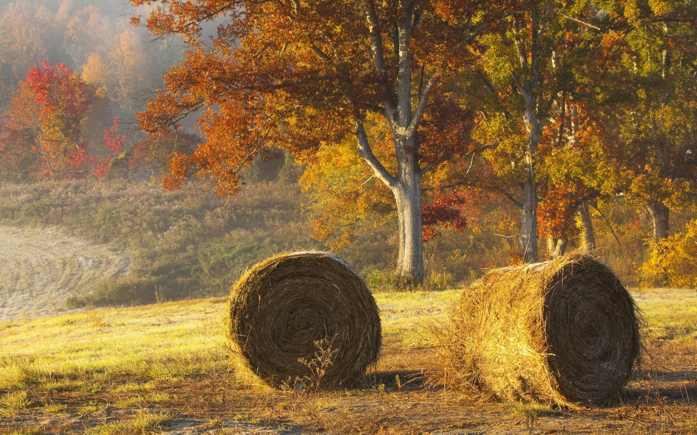
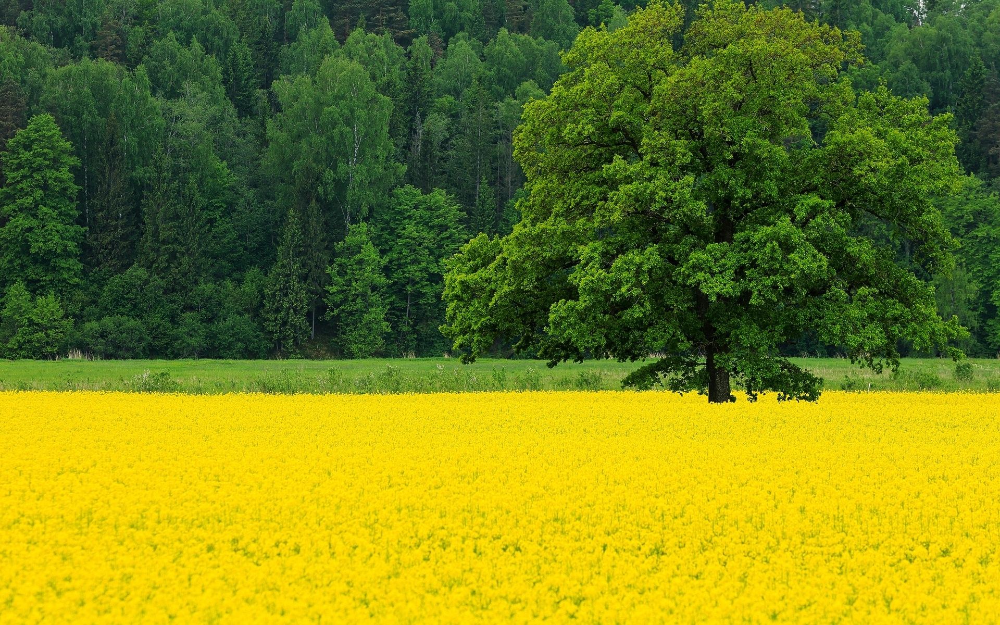

Photo gallery
2020.10.01 20:29







- Cum ne vindecăm cu terapia prin copaci şi ce trebuie să ...
Unul dintre numeroasele videoclipuri de stoc gratuite extraordinare de la Pexels. Acest videoclip este despre teren agricol, vast, verde - Italia, Toscana, de vară, rural, peisaj, natura, copaci ...
Puzzle copaci verzi și câmp de iarbă în timpul zilei - jocuri de puzzle glisante online. Puzzle de placi glisante, jocuri de puzzle pentru copii. Joacă puzzle glisant gratuitcopaci verzi și câmp de iarbă în timpul zilei. - Ulm imagini, fapte de pe Elm Copaci - Tree Pictures
Compunere peisaj de toamnă, copaci şi frunze. De către. mc - 18 noiembrie 2009. 52. 6925. O compunere peisaj de toamnă, în care sunt descriși copacii și frunzele, precum și transformările care au loc în natura în acest anotimp. Peisaj de toamna cu descrierea copacilor și a frunzelor. - Poze : peisaj, copac, natură, iarbă, Munte, structura ...
Tabloul canvas imprimat, Copaci cu promoroaca pe camp cu zapada, este disponibil in 1, 2, 3, 4 piese, in versiunile: originala, alb-negru, sepia, la diferite ... - Videoclip de stoc gratuit cu arbori, câmp, copaci
Download-uri Poze : peisaj, copac, pădure, plantă, lemn, soare, camp, luncă, prerie, lumina soarelui, dimineaţă, floare, Violet, seară, floră, flori sălbatice ... - Tablou: Copaci Cu Promoroaca Pe Camp Cu Zapada
Arborii sunt un element decorativ important si o sursa de oxigen pe care ne-o ofera in dar frumusetea naturii. Peisajele nu ar mai fi asa de atragatoare si impunatoare fara existenta lor. Peisajele naturale ale vailor si muntilor, de la campii pana la zonele tropicale sunt innobilate de existenta arborilor care se regasesc in diferite soiuri, culori, forme si inaltimi care au menirea sa ofere ... - Tablou: Copaci cu promoroaca pe camp cu zapada
La Green Camp vă așteaptă o vacanță ca în povești la peste un milion de stele, pentru că veți avea senzația că înnoptați sub cerul liber.. Într-un decor natural, confortul premium e cheia unei experiențe unice. Cortul de glamping îmbină rafinamentul cu întoarcerea la origini. - Tipuri si Specii de Ciuperci Comestibile: Descriere si ...
Download-uri WallpaperManiac Imagini de fundal : în aer liber, rece, copaci, camp 2048x1365,1678155 - Pagina 3 din 8 poze Copaci
Tabloul imprimat pe panza canvas, Copaci cu promoroaca pe camp cu zapada, este disponibil in 1, 2, 3, 4 piese; in versiunile de culoare: originala, alb-negru, sepia ... - Top 10 Glampinguri, Casute in copac si Cabane ascunse din ...
Familia Elm Tree este alcătuită din specii 30 de tip Elm. Veți găsi, de asemenea, mai jos o mulțime de fapte minunate pe copaci elm, inclusiv informații despre specii de brad, tipuri de copaci ulm, Plantarea de informații, și multe altele. Acest lucru este informații valoroase și utile care vă pot ajuta să aflați mai multe despre ulm și ajutor în identificarea copacilor diferiți